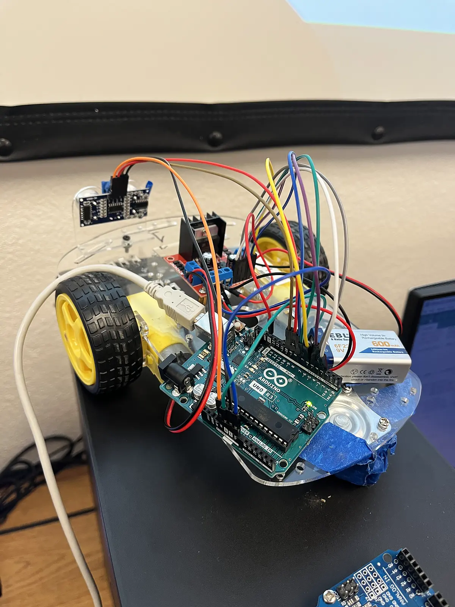
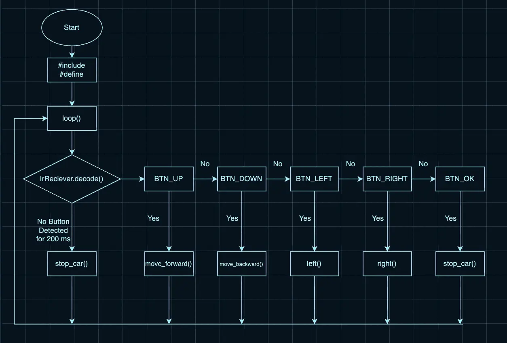

01The objectives
- Read accurate distances from the ultrasonic sensor.
- Hold a set distance of 8 ± 2 in from an object using closed-loop control.
- Start facing backward and escape an enclosed box on its own.
- Run a predetermined maze, reliably and repeatably.
02Mechanical fixes
The car had two drive wheels on independent DC motors and a swivel caster in the back. The caster dragged unevenly and kept ruining turns, so after taping it failed, we removed it entirely, and the car tracked more consistently. The left motor was also weaker than the right and pulled the car left, so we compensated with extra power to that side in code. And because every test run drained the 9 V battery and slowed the wheels, we swapped in fresh batteries to keep trials comparable.
03What happened
The ultrasonic sensor couldn't read reliably past about 25 inches on the floor. For the box escape, we used the sensor once at close range and finished with open-loop moves. For the maze, open-loop timing kept drifting as the battery faded, so we added an infrared remote and steered through, and it worked every time. The lesson I took away was to test the sensor in the real conditions early, before designing around it.
04Gallery


Click any image to enlarge. Technical drawings are shown in an inverted blueprint style.